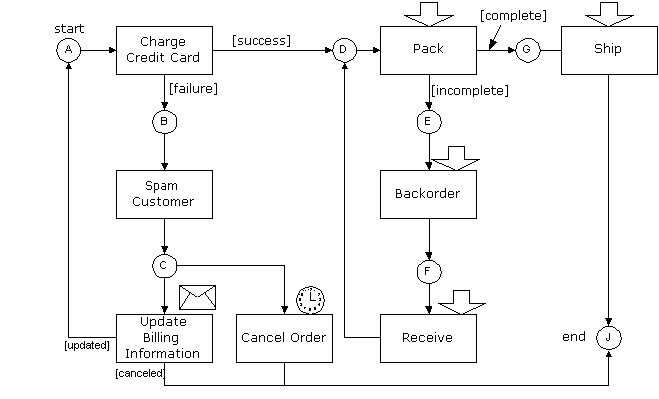

OpenACS Documentation : Workflow : Workflow Conceptual Guide
|  |
| Order Fulfillment Workflow (open in separate window) |
The definition of a workflows (what needs to be done to a case and in what order), are formalized in terms of a computational model called Petri nets, and the example above is indeed a Petri net. Let's walk through it and explain it in detail.
Transitions are active. They move tokens from their input places (the places that has an arc pointing into the transition) to their output places (the places you get to by following the arcs going out of the transition). When this happens, the transition is said to fire.
Transitions can only when there's at least one token in each input place. When that is the case, the transition is enabled. That the transition is enabled means it is able to fire.
The time the transition is enabled and the time it fires are different. The thing that causes an enabled transition to fire is called trigger.
There are four diffent types of triggers:
The transition fires with a succes or a failure. If it was successful, it produces a token in place D. If there was a failure, it produces a token in place B. Thus, the outcome of the attempt at charging the credit card governs the further routing of the process.
The rule is that firing a token consumes one token from each of its input places, and places a token on each of its output places, for which the guard is true.
The guard is a predicate, in this case the
[success] and [failure] on the arcs going
out of 'Charge Credit Card'. Guards are what enables us to do
conditional routing. The 'Charge Credit Card'
transition acts as an or-split, because it chooses
either one route or the other.
The above form of or-split is called an explicit or-split. There's another form of conditional routing, which is the implicit or-split that chooses between the transitions 'Update Billing Information' and 'Cancel Order'. Since there's only one token in place C, only one of the two transitions can have it. But, contrary to the explicit or-split, where the decision is explicitly made as soon as 'Charge Credit Card' finishes, the choice between 'Update Billing Information' and 'Cancel Order' is made as late as possible.
Both transitions will be enabled when there's a token in place C (i.e. when the spam has been sent). If the user updates his billing information before the timed 'Cancel Order' transition times out, 'Cancel Order' is never fired. And vice versa: If the order is canceled (which will probably involve spamming the user again to let him know that his order was canceled), then he won't be able to update his billing information and will have to enter a new order. Thus, the choice is made implicitly, based on the timing.
The guard will generally depend on case attributes. The 'Charge Credit Card' transition above will set a case attribute to either 'success' or 'failure', and the guard will check this value to determine its result. Case attributes can hold more complex values than simple yes/no values, but the guard must always be either true or false.
The workflow package also handles parallel routing, where two or more things happen concurrently or in no particular order. This is done by having a transition produce more tokens than it consumes, which is called an and-split. To re-synchronize execution with a transition that waits for both concurrent threads to finish before it continues. This is called an and-join and is simply a transition that consumes more tokens than it produces.
The user tasks must be assigned to one or more users or groups. This can be determined once and for all, e.g. the shipping department is responsible for shipping. It may also be done by hand for a specific case, e.g. the article on environmental pollution should be written by Jimmy, who knows everything about pollution. Or it can be done automatically, e.g. bugs are automatically assigned to the user responsible for the product the bug was found in.
When a user is assigned to a task, the task will show up on the users worklist. From here, the user can pick a task to work on, and mark it started. This removes the task from the worklist of other assigned users, so the task won't get executed twice.
Often, the task will have an output. In the 'Pack' transition, for example, the user is supposed to say whether the package is complete or not. This is set as a case attribute and used for branching in the or-split.
Not until the user finishes the task does the transition actually get fired. The user may also choose to cancel the task, in which case the task will re-appear on other users' work list.
| Last Modified: $Date: 2000/08/31 21:56:45 $ |